Automated flowerpot
Final Project for Modern Manufacturing Processes
Description
This the documentation of making the actual flowerpot that was then automated with an Arduino, light sensors, water pump and more. The actual implemention of the circuitry and the logic in the code will not be covered here.
With me in the group are Aron Björn and Hákon, please find their websites here:
Below is a video showing the flowerpot in action. Reacting to changes in ambient light and soil moisture.
Project management
To make sure every member of the group had a pre-determined role in the assignment, the group decided to make a Gantt chart to give a rough estimate of time spent on each aspect of the assignment. The Gantt chart can be found here below: (note that some of the things included in the Gantt chart are only relevant to another project)
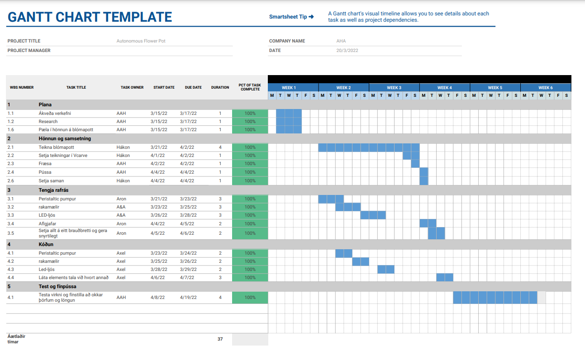The Design
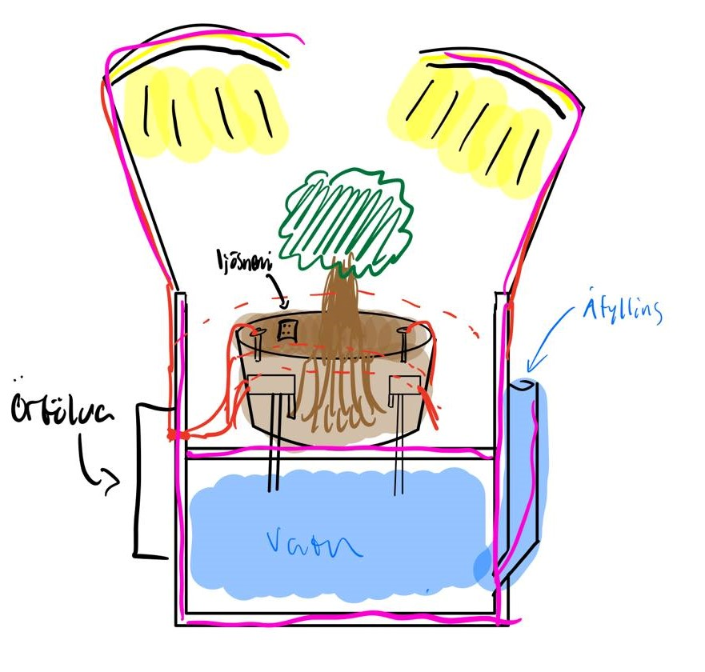Due to the fact we were already paired together in another course and had decided to create a self-watering and -lighting flowerpot, it was ideal to make the pot in this course. The pot we were to design needed to fulfill the requirements for both assignments, so quite a lot of planning went into the design. Above is a rough draft of the pot.
The group wanted to assemble the pot using only the methods we had learnt in this course, i.e. pressfits. The pot also required two "levels", one for the plant & and dirt and another one for the water supply. Next up we had to design the flowerpot. Fusion 360 was used to model the product. After some deliberating and some redesigns we finally landed on a design we were all happy with. Snapshots of the final design can be seen here below:
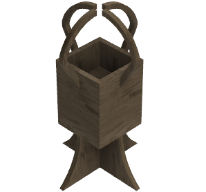Milling
For the milling to work you first have to download an application, called Vcarve, and a link to the application can be found here. The application you can download for free is a trial version, but everything you'll need is included in that version. To get started, you first have to import your Fusion 360 drawings as a .DXF (Drawing Exchange Format) file, and import that into Vcarve. From there you can set your feeds and speeds, as well as the toolpaths. For your settings to be accurate you have to know what kind of milling teeth you'll be working with. In our case there were two. 6 mm Down-cut, which means the grain is pushed downwards for a finer edge was used for the first 3 mm, and then a 6 mm Up-cut for the rest of the milling
The milling teeth can be seen below, with the up-cut on the left & the down-cut on the right:
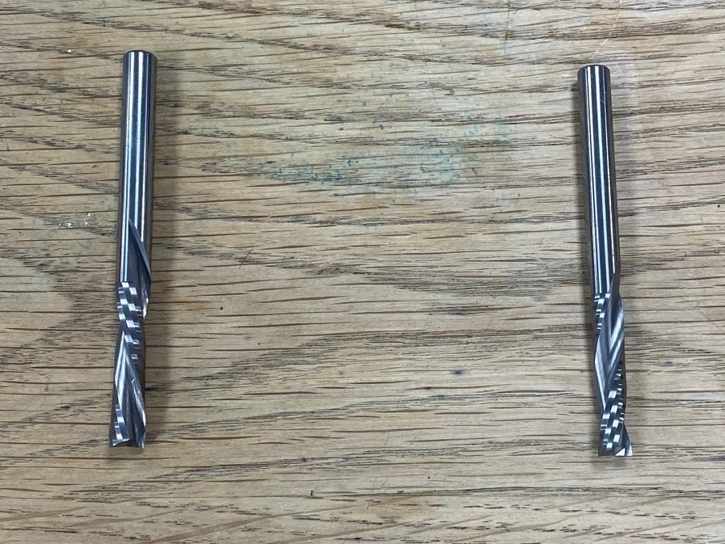Feeds And Speeds
The feeds and speeds were set after consultation from our teacher, and were the same for both the Down-cut and Up-cut milling teeth. A screenshot of the settings can be seen below:
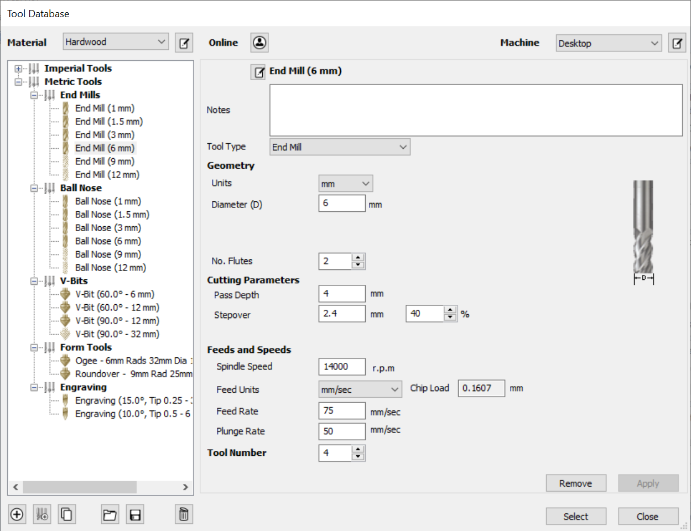Once you've successfully set your feeds and speeds you can get started on the toolpaths
Toolpaths
Your toolpaths represent the movement the milling machine will have to take in order to mill your object. In our case all the milling should fully penetrate the object so we click "profile toolpath". From there we create two toolpaths, one for the down-cut in the range 0 - 3mm and one for the up-cut in the range 3-18mm which should cut through the plate. Make sure you pick the right tools for each toolpath. Lastly you need to add tabs to your toolpath. The purpose of the tabs is to make sure nothing moves while the milling is taking place so that everything comes out right. Lastly you click calculate and the toolpath is ready. Below you can see the toolpaths as well as the tabs:
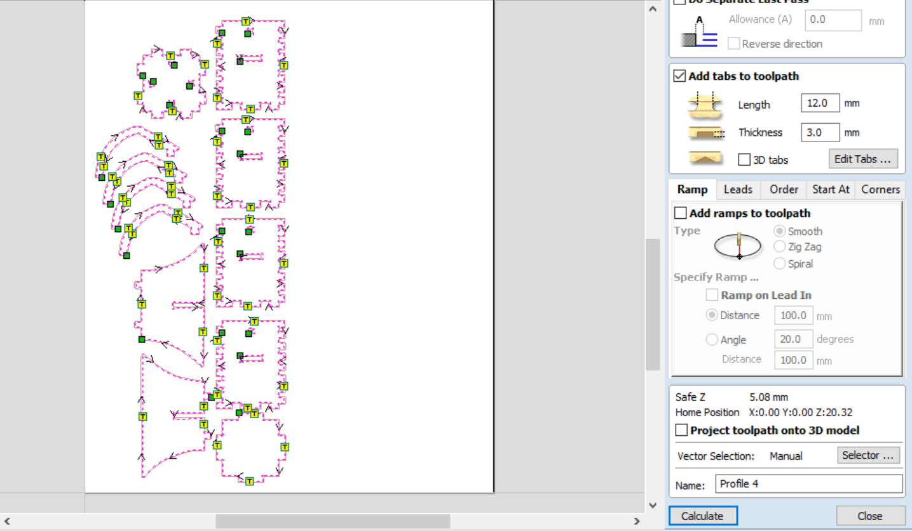Assembly
After the milling was completed the only thing left to was to assemble the pot. However we noticed that the Shop bot had messed up for some unknown reason, maybe warping in the plate, but it milled the toolpath between holes in two of our sides, and the holes were in completely the wrong place on the other two. The rest of the components however fit very tightly together. After a short chat with our teacher we concluded that the most likely reason for the failure was that since the vectors were not connected together they most likely moved when they were being prepared for the Shop Bot. Since we are recourceful we decided to just make the correct holes ourselves, and trim what didn't fit together. The correct hole was first drilled with a 17mm Ø hole saw, and then used a file to achieve the square shape. The middle platform was then trimmed with a band saw to make it fit (since the holes for the platform were in the wrong place).
Process
Here you can find images and a short video showing the process of making the flower pot.
.jpg)
.jpg)
After the Shop bot is finished you'll need a chisel to get the objects out. This can be cumbersome if you put many tabs (which "skip" a certain length in the last phase to make sure your objects don't move during milling) but it is worth it in the long run.
Additional parts
The group realized not everything could me milled, either due to material or shape. Therefore three components were 3D printed, the holders for the hose responsible for watering,
The group realized not everything could me milled, either due to material or shape. Therefore three components were 3D printed, the holders for the hose responsible for watering,
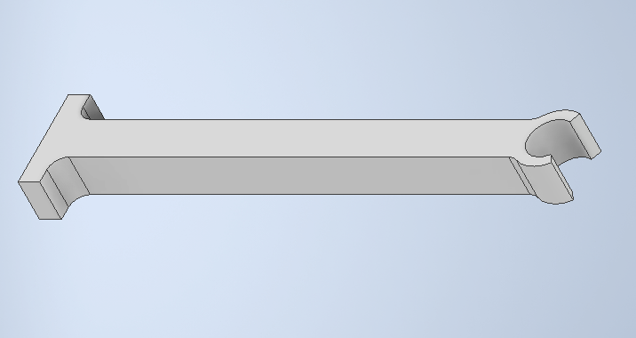The bracket, shielding the microcomputer, controlling the watering and lighting
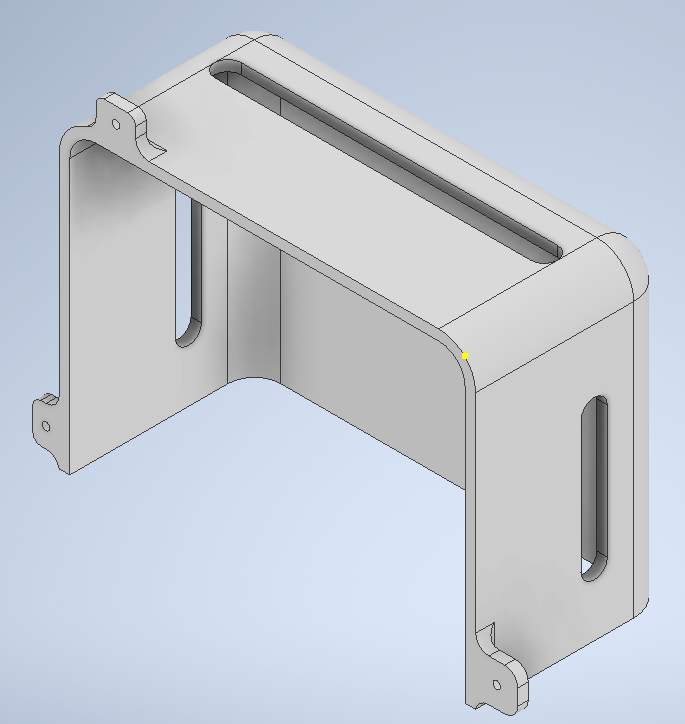And the filling funnel for the water tank.
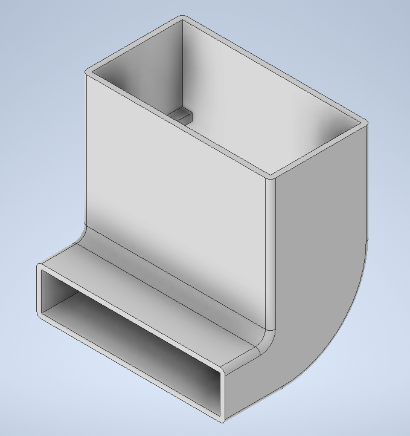The group also laser cut a lining for the pot, making sure the wood would not draw moisture from the soil. The image shows the lining installed, as well as the holders
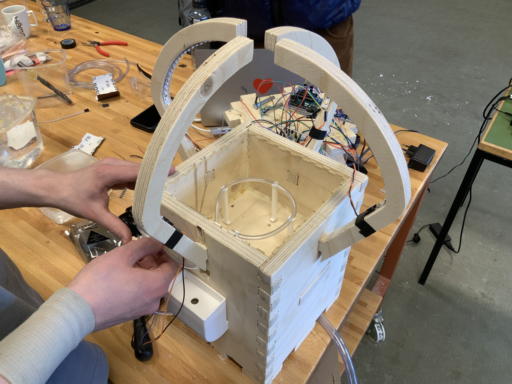Assembly
After the milling was completed the only thing left to was to assemble the pot. However we noticed that the Shop bot had messed up for some unknown reason, maybe warping in the plate, but it milled the toolpath between holes in two of our sides, and the holes were in completely the wrong place on the other two. The rest of the components however fit very tightly together. After a short chat with our teacher we concluded that the most likely reason for the failure was that since the vectors were not connected together they most likely moved when they were being prepared for the Shop Bot. Since we are recourceful we decided to just make the correct holes ourselves, and trim what didn't fit together. The correct hole was first drilled with a 17mm Ø hole saw, and then used a file to achieve the square shape. The middle platform was then trimmed with a band saw to make it fit (since the holes for the platform were in the wrong place).
The final product
Finally after all the above was completed we had a great flowerpot on our hands. The group was happy with the results (even though the Shop bot messed up a little). The group also felt the experience of working with the milling machine and learning how to prepare files for milling was a valuable experience and all in all felt the assignment was a success. The assembled flower pot can be seen in the following picture:
.jpg)
.jpg)
Here is a short video introducing the product
My contribution
What I did.
While Hákon did most of the drawing and designing, I helped plan the layout and orientation of the object. I oversaw the milling process with Hákon.
My Workload| Deciding what to make and planning | 3 hours |
| Preparing design for milling | 3 hours |
| Milling | 1 hour |
| Documenting | 4 hours |
| Cutting and sanding | 2 hours |
| Total | 13 hours |
Leaflet
Finally, please find a leaflet for the project here.
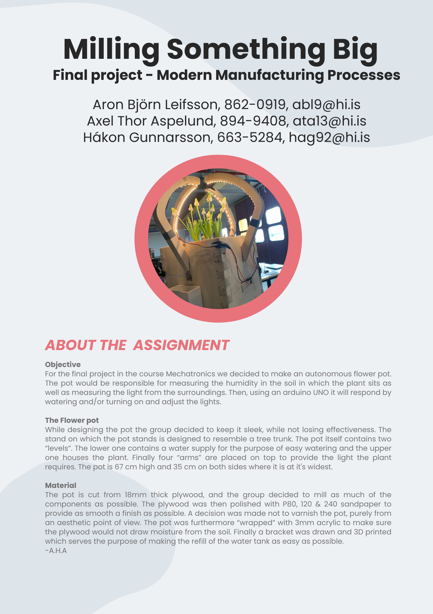COPYRIGHT
(c) Aron Björn Leifsson, Axel Thor Aspelund, Hákon Gunnarsson 2022
This work may be reproduced, modified, distributed, performed, and displayed for any purpose, but must acknowledge "Autonomous Flower Pot A.H.A.". Copyright is retained and must be preserved. The work is provided as is; no warranty is provided, and users accept all liability.